SAFARI
Users
- Equipment
- Scaling & Cleaning a Flat Fish
- Filleting a Flat Fish
- Skinning a Flat Fish
- Fish Soup Stock - using the off-cuts
Equipment
|
|
Naturally, the right tools make a complex job like preparing fish much easier. In the photos to the left are all the tools I use for the job. You may already have some of them.
|


Scaling & Cleaning
Here in Southern California, where Asian fish markets abound, any decent market will scale and clean the fish for you at no charge - but some fish sold at an unusually low price are marked, "no cut, no clean" - so then it's up to you.
For our example we'll use a Petrale Sole (actually a flounder) but any fish of this general shape will be pretty much the same. Linked from our Varieties of Fish page (very large page) you will find "Details and Cooking" pages for each variety of fish. Each of these have notes with detailed information about handling a particular fish. The photo specimen was 18-1/2 inches long and weighed 3 pounds 5-1/4 ounces and yielded 1 pound 10-3/4 ounces of skin-on fillets (50%).
Important:
When filleting fish you need to have your sharpening stone ready and know how to use it. Fish fillet knives get dull quickly because their razor edge is scraping along hard bones. If you find any reluctance slicing through skin, time to sharpen.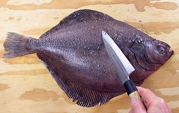 First scale the fish (not all fish have scales, but all Flat Fish that I know of do). Pros use a fish scaling tool (concentric toothed rings) on some fish and a very coarse stainless steel scouring pad for others, but for a few fish the back of your prep knife (if it has sharp edges) will do fine. This is the messy part as scales will be flying about, so you might want to do the scaling outdoors.
Some fish are much harder to scale than others. In some cases you
have to pull some of the scales off with long nose pliers, in others you
have to shave some of the scales off with the sharp edge of the knife, and
for Gray Sole, I found a grapefruit spoon worked well.
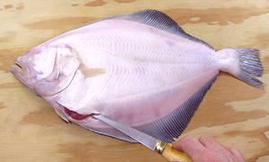
Always cut in from the blind side. The cut will be short because of bone
at each end, but needs to be wide enough to get your fingers in deep to
pull the guts out.
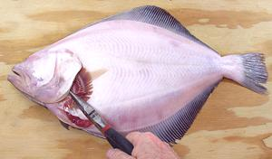
Pull the Gills out from both sides. This can be done before or after
making the opening cut, but should be done before pulling the guts, as
that can make it easier to pull them from some fish.
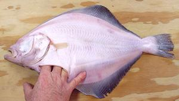
Now get your fingers up into the fish as far as you can, and pull the
innards down and out. The esophagus will give the most resistance, but
will be pullable. Note that the body cavity goes far back in the fish,
much farther than your cut. There's a bone keeping you from getting
back in there, but everything there will pull out with the stuff from
up front.
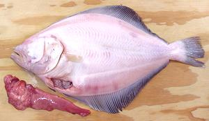
A cleaned fish, with the guts from one side. The other side will also
have a long point coming from near the tail. There should now be a clear
opening from under the gill covers into the interior. Pull out anything
still there.
Filleting
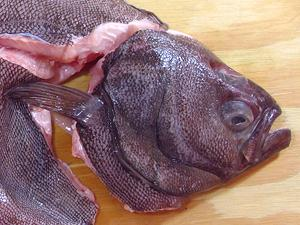
Make cuts around the collar from both sides and remove the head. Note
that the cuts go behind the pectoral fins and in front of the pelvic
(bottom) fins. there may be bones behind the pectoral fins that you cut
with your kitchen shears. Use you kitchen shears to sever the backbone.
Bending the head will help if the backbone is quite strong. Cut the
pelvic fins from the fish as they have bones under them and almost no
flesh will be lost.
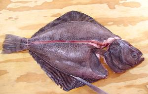 Make a cut across the tail on both sides. Make another cut along the center of the fish all the way to the backbone. The backbone should be right under the lateral line where it is straight, but continue to cut straight forward when the lateral line curves upward.
Now outline your fillet with cuts along both top and bottom. The
knife should be at a very shallow angle, following the fin rays, but
need not be very deep, so long as it cuts through the skin.
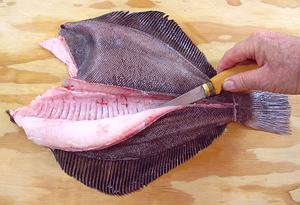 Eye side up, start from the backbone cut, make a cut toward the top of the fish, following the bones and fin rays all the way out until you meet the shallow cuts you made at the edge. Pull the fillet free from the skeleton.
Turn the fish and make the same filleting cut from the backbone to the bottom edge of the fish.
Flip the fish blind side up and make the exact same cuts to free the fillets. Some Flat Fish will have a very thin blind side, but others will have substantial flesh on that side too - especially those that get tired of waiting in ambush and go hunting in mid-water like regular fish.
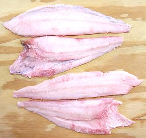
Now you have a set of fillets, a thick pair and a thin pair. These will
have skin on them, which you may choose to remove or not, depending on
your planned use and the nature of the skin. If it shrinks badly in
cooking or has a bad taste, remove it, but I haven't found a Flat Fish
with these problem.
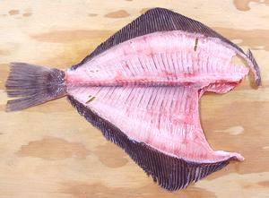
You should have a nearly flesh free skeleton. Cut it up with kitchen
shears and use it to make fish stock for your recipe. For complete
details see our
Making Fish Stock. page.
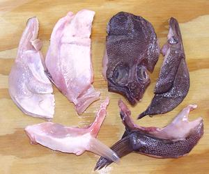
The head goes into the stock pot with the fins and bones. It will work
better if cut apart. First use you kitchen shears to cut the collar
(the part with the fins) free at both ends on both sides. Then, on both
sides, insert your shears into the mouth and cut straight back to
remove the lower jaws (right and left sides in photo). Next, split the
head in half from top down. The best way is with a sharp Chinese cleaver
knife driven by a soft faced mallet. Rinse, removing any gooky stuff,
and add to the pot with the skeleton.
Skinning Flat Fish
Members of the Flounder Family have skin with little shrink and with no strong or offensive flavor, but sometimes you may wish to remove the skin anyway. If you do skin fillets, you can toss the skins into the stock pot with the head and bones. The fillet in the photos below is from a Striped Bass, but there is negligible difference between skinning that fillet and skinning a flat fish fillet.
Note: small flounders like Rex Sole and Gray Sole are almost never skinned. The skin is thin and fragile, but it's likely the only thing holding the delicate fillet together. Trying to skin one of these may not go well.
 You'll need a flat cutting board and a very sharp knife with a long
straight blade. I find my old fashioned 8 inch turkey slicing knife is
excellent for this purpose. The round end slicing knives now recommended
by most food writers are too flexible to give you the control you need
for skinning fish.
You'll need a flat cutting board and a very sharp knife with a long
straight blade. I find my old fashioned 8 inch turkey slicing knife is
excellent for this purpose. The round end slicing knives now recommended
by most food writers are too flexible to give you the control you need
for skinning fish.
Start skin side down with the fillet lined up along the edge of the
board so the knife has flat access for the full length. Have the tail end
just a little over the edge of your cutting board so you can bend it down
and get a straight start with the knife blade. At this point you can see
what you're doing and that you're down to the skin and not through it.
 Once you're started you're going to be running blind. The fillet isn't
going to curl up as shown in the photo, that was done just to show you
what is going on. Once you're started you can move your fingers up onto
the board to get a better grip.
Once you're started you're going to be running blind. The fillet isn't
going to curl up as shown in the photo, that was done just to show you
what is going on. Once you're started you can move your fingers up onto
the board to get a better grip.
Holding the skin tightly to the board, keep the sharp edge of the blade turned just vaguely downward toward the skin and run it forward using just a tiny bit of sawing motion if you need to. Don't turn the blade too far down or you'll cut through the skin or at all up or you'll be taking flesh with the skin. When it's going just right the blade has sort of a sizzling sound and feel.
If you accidentally cut through the skin, you can start again from
the front tip of the fillet, trending somewhat downward.
 You should now have a skin with practically no flesh and a nice clean
fillet with no skin. If your fillet has some of the silver inner lining
of the skin on it, don't worry about it. If you've broken through the
skin and have patches of whole skin on the fillet, they will be
difficult to remove (use the point of your filleting knife) so think
hard whether you can tolerate a bit of skin before you try.
You should now have a skin with practically no flesh and a nice clean
fillet with no skin. If your fillet has some of the silver inner lining
of the skin on it, don't worry about it. If you've broken through the
skin and have patches of whole skin on the fillet, they will be
difficult to remove (use the point of your filleting knife) so think
hard whether you can tolerate a bit of skin before you try.
For all the Flat Fish I've studied, it's fine to toss the skins into
the pot with the head, bones and fins for making fish stock for soups,
chowders, and stews.
Fish Soup Stock
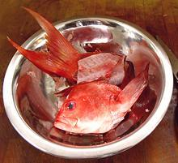We have a separate page with complete details for Making Fish Stock and storing it.